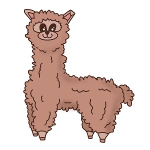

|  |
Fatima BouhamdanIA, Fall 2020 |
Lab Time: Wednesday, 4-6 PM EDT
IDE: XCode/Mac
Lab Slides (if available): N/A
Pronouns: she/her/hers
Major: Computer Science
Class Standing: Senior
Hometown: Dearborn, Michigan
Why I teach: To be a mentor and resource for students :) I love helping students become passionate in computer science and discover the various opportunities that exist
Ask me about: food, baking, classes, TV shows, movies, internships, and anything else that comes to mind!